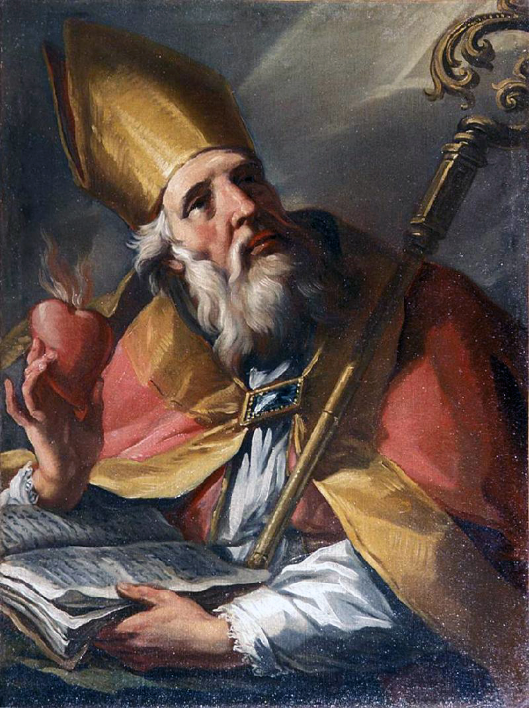
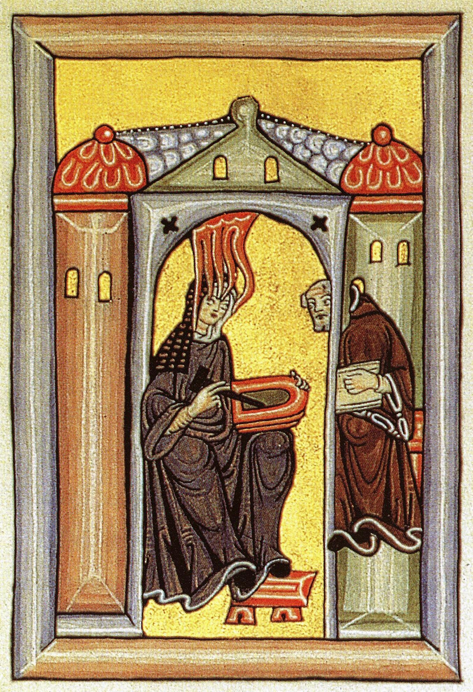

6. gaia · Erdi Aroko filosofia: Jainkoa, fedea eta arrazoia
Erdi Aroko filosofian sartzeko
II. Zatiaren sarrerak ezarri du markoa: mila urtez, Europako filosofiak kristautasunaren barruan pentsatzen du, Jainko bakar eta sortzaile bat, gizakiaren salbazioa eta fedez onartzen den egia errebelatu bat baieztatzen dituen erlijio baten barruan (II. zatia). Gai hau marko horren barruan filosofiak egin zuenean sartzen da. Eta behin eta berriz egin zuena funtsezko galdera bakar baten aurrean neurtzea izan zen: Jainkoak egia jada errebelatu badu, zer geratzen zaio arrazoiari egiteko? Fedea eta arrazoia, sinesten dena eta frogatzen dena, aliatuak dira, arrotzak ala aurkariak?
Galdera bat, hiru erantzun. Gai hau galdera horren inguruan antolatu dugu, horixe baita garai osoari batasuna ematen diona, eta kontrastez ondoen aztertzen dena. Aldamio-lana egiten duen atal baten ondoren, zeinak azaltzen baitu nola banatu zen eta nola lan egin zuen Erdi Aroko filosofiak (§25), gaiaren bihotza hiru pentsalari handi dira, galderari hiru modu desberdinetan erantzun ziotenak. Hiponako Agustinek, garaiaren hastapenetan, fedea eta arrazoia mugimendu bakar batean urtzen ditu: sinetsi egin behar da ulertzeko (§26). Akinoko Tomasek, Erdi Aroaren gailurrean, arretaz bereizten ditu, harmonizatzen direla erakusteko, eta arrazoi hutsez frogatzen du Jainkoaren existentzia, bere bost bide ospetsuekin (§27). Ockhamgo Guillermok, amaieran, banandu egiten ditu: arrazoiak ia ezin du ezer frogatu Jainkoaz, eta hura oso-osorik fedearentzat geratzen da (§28). Sinetsi ulertzeko, harmonizatu, banandu: hiru jarrera, jarraian irakurtzea komeni dena, bakoitza besteen aurrez aurre hobeto ulertzen delako, eta hiruren artean arazoaren arku osoa marrazten dutelako, batasunik estuenetik modernitateari atea irekiko dion dibortzioraino.
Laugarren figura bat. Gaia ikasgelatik irtenda itxiko dugu. Teologiaren maisu handien ondoan, Erdi Aroak izan zituen eskolako filosofoaren moldean sartzen ez diren figurak, hala ere leku bat merezi dutenak. Hildegard von Bingen (abadesa, bisionarioa, naturalista, konpositorea) horietako bat da, eta harekin, Aspasiak (§08) eta Hipatiak (§24) ireki zuten seriearen hirugarrenarekin, gogorarazten dugu garai baten pentsamendua ez dela inoiz oso-osorik kabitzen bere autore kanonikoetan (§29).
§25 · Erdi Aroko filosofia: etapak, metodoak eta auziak
Autoreetan sartu aurretik, aldamio pixka bat komeni da: jakitea zer etapa handitan banatzen den mila urte hauetako filosofia, nola lan egiten eta irakasten zen hartan, zein izan zen haren arazo nagusia eta zer herentzia grekoz baliatu zen hura pentsatzeko. Atal honek armazoi hori muntatzen du; hurrengoek hiru pentsalari zehatzekin betetzen dute.
Bi etapa handi: patristika eta eskolastika. Erdi Aroko filosofia kristaua bi une handitan banatu ohi da, tartean trantsizioko hainbat mende dituztela. Lehena patristika da (pater, «aita», hitzetik): Elizgurasoak deitutakoen obra, lehen pentsalari kristauena, zeinek, II. eta VIII. mendeen artean, doktrina definitu eta beste interpretazio batzuen aurrean defendatu baitzuten. Haien zeregina ez zen hainbeste ikertzea, eraikitzea baizik: fede berriari formulazio intelektual sendo bat ematea, garaiko kultura paganoarekin lehiatzeko gai izango zena. Horretarako, eskura zuten filosofia grekora jo zuten, platonismora batez ere. Patristikaren gailurra, eta alde handiz haren filosoforik sakonena, Hiponako Agustin da (§26).
Bigarren unea eskolastika da (schola, «eskola», hitzetik): Erdi Aroko eskoletan lantzen den filosofia (monasterioetakoak, gero katedraletakoak eta, XIII. mendetik aurrera, unibertsitateak), XI. eta XV. mendeen artean. Patristikak fundatu egiten bazuen, eskolastikak sistematizatu egiten du: jada ezarritako doktrina-gorputz bat jasotzen du oinordetzan, eta hura ordenatzeari, zehazteari eta gero eta zorroztasun tekniko handiagoz defendatzeari ekiten dio. Irakasleen eta ikasgelen filosofia da, latinez idatzia publiko espezializatu batentzat, oinordetzan hartutako arazoak atsedenik gabe eztabaidatzen dituena. Haren bi figura nagusiak, eta gai honetako beste bi protagonistak, Akinoko Tomas (§27) eta Ockhamgo Guillermo (§28) dira, jada azken fasean, eraikin eskolastiko handia pitzatzen hasten denean.
Nola lan egiten zen: lectio, quaestio, disputatio. Eskolastika ez da aro bat bakarrik: metodo bat ere bada, irakasteko eta pentsatzeko modu bat, ezagutzea komeni dena, irakurriko ditugun testuen forma bera azaltzen baitu. Irakaskuntza kateaturiko hiru ariketaren inguruan zebilen. Lehena lectio zen: testu autorizatu baten irakurketa iruzkindua (Biblia, Aristotelesen obra bat, Elizgurasoen sententzia-bilduma bat); maisuak irakurri eta lerroz lerro azaltzen zuen. Irakurketa horretatik sortzen zen, berez, bigarren ariketa: quaestioa, auzia, testuak planteatzen duen eta aparte eztabaidatzea merezi duen arazoa. Eta auzia hirugarrenaren bidez ebazten zen, hirurotan bizienaren bidez: disputatioa, eztabaida, arauturiko debate bat, non lehenik tesi baten aldeko eta kontrako argudioak azaltzen baitziren, eta maisuak azkenean bere ebazpen propioaz ixten baitzuen auzia, objekzioei banan-banan erantzunez.
Egitura hori da (auzia planteatu, kontrako argudioak lerrokatu, ebatzi, objekzioak errefusatu) garaiko obra handiei forma ematen diena: summak, jakintza guztia ordenaturik besarkatu nahi duten bilduma erraldoi horiek. Akinoko Tomasen Summa theologiae, handik aterako baitira bost bideak (§27), osorik dago horrela idatzita: eztabaidaturiko auzien segida gisa. Komeni da hori gogoan izatea, irakurtzen duguna testuingurutik ez ateratzeko: testu haiek ez dira saiakerak, ez tratatu jarraituak, eskola-debate baten piezak baizik.
Auzi handia: fedea eta arrazoia. Zertaz eztabaidatzen zen ikasgela haietan? Gauza askotaz, baina batek zeharkatzen ditu gainerako guztiak eta hark ematen dio bizkarrezurra gai honi: fedearen eta arrazoiaren arteko harremanak. Arazoa, ikusi genuenez, kristautasunetik beretik sortzen da (II. zatia). Azken egia Jainkoak errebelatu badu eta fedez onartzen bada, zer zeregin geratzen zaio arrazoiari, grekoek mendeetan zorroztutako tresna horri? Erantzun posibleek mutur batetik besterainoko sorta osoa osatzen dute. Mutur batean fideismoa dago: arrazoiaz mesfidatzen da eta dena fedearen esku uzten du, halako punturaino non autore goiztiar batek, Tertulianok, galdetu ahal izan baitzuen zer ikustekorik duen Atenasek Jerusalemekin, filosofiak ebanjelioarekin. Beste muturrean, kontrako tentazioa agertuko litzateke: arrazoia auzitegi autonomo bihurtzea, fedea kontraesateko ere gai dena; horixe defendatzea leporatu zitzaien Aristotelesen irakurle erradikal batzuei, beren «egia bikoitzaren» doktrinarekin. Bi muturren artean tarteko jarrera asko kabitzen dira, eta horiexek dira benetan kontatzen dutenak.
Hurrengo hiru atalek jarrera horietako hiru zeharkatzen dituzte, eta ez kasualitatez, baizik eta hiruren artean ibilbide osoa marrazten dutelako. Agustinek fedea eta arrazoia lotzen ditu, ia urtzeraino: sinetsi egiten da ulertzeko (§26). Tomasek bereizi egiten ditu, harmonizatzeko: bakoitzari bere eremua ematen dio, eta erakusten du ezin dutela elkar kontraesan, egia bakarra baita (§27). Ockhamek banandu egiten ditu: Jainkoa ukitzen zuen ia guztia kentzen dio arrazoiari, eta fedeari itzultzen dio (§28). Ez da komeni gehiago aurreratzea: aski da gogoan hartzea galdera berak oso erantzun desberdinak onartzen dituela, eta hari erantzuteko modua mendeekin aldatzen dela.
Herentzia grekoa: bi harrera. Beren fedea pentsatzeko, Erdi Arokoak ez ziren hutsetik abiatu: oinordetzan jasotzen ari ziren filosofia grekoan bermatu ziren. Baina ez zuten dena batera jaso, eta horrek markatu zuen bi etapen arteko aldea. Erdi Aroko filosofiak Antzinaroaren segidako bi harrera handi baliatzen ditu.
Lehena platonismoarena da, eta, zehazkiago, haren bertsio berantiarrarena: Plotinoren neoplatonismoarena. Aski goiz egon zen eskuragarri, eta oso hurbila gertatu zen kristautasunetik, haren neurrira egina zirudien punturaino. Ez da zaila zergatik ikustea: mundu sentikor eta aldakor baten eta mundu adigarri, betiereko eta goragoko baten arteko banaketa platonikoa (§09) ondo egokitzen zen kreaturaren eta Jainkoaren arteko bereizketa kristauarekin; arima ez-material eta hilezkor baten ideiak, gorputza baino gorago dagoenarenak (§11), antropologia kristaua berresten zuen; eta Platonen Ongi gorena Jainko sortzailearen aurrerapen gisa irakur zitekeen. Horixe da patristikak lantzen duen herentzia, eta Agustinek jeinuz kristautzen duena (§26).
Bigarren harrera, askoz berantiarragoa eta askoz gatazkatsuagoa, Aristotelesena da. Haren obraren zati handi bat galduta zegoen Mendebalde latindarrarentzat, eta XII. eta XIII. mendeen artean baino ez zen berreskuratu, grekotik eta, batez ere, arabieratik egindako itzulpenen bidez: mundu islamiarreko filosofoak izan ziren, Avicena eta Averroes esaterako, Aristoteles kontserbatu eta iruzkindu zutenak, eta haien bitartekaritzaz (eta Toledokoa bezalako itzulpen-guneenaz) itzuli zen Europara (II. zatia). Haren etorrera astinaldi bat izan zen. Aristotelesek sistema oso eta ahaltsu bat eskaintzen zuen natura azaltzeko, baina fedearekin uztartzen zailak ziren tesiak zituen, hala nola munduaren betierekotasuna, kreazioarekin talka egiten duena, edo arimaren hilezkortasun pertsonalari buruzko haren zalantzak. Eliza hura irakastea debekatzera ere iritsi zen, eta XIII. mendea haren digestioaz bizi izan zen. Akinoko Tomasen egiteko handia horixe bera izango da: erakustea aristotelismoak, ondo ulertuta, fedea mehatxatzen ez duela ez ezik, haren zerbitzura ere jar daitekeela (§27). Horrekin, Aristotelesengan aztertu genuen formaren, aktoaren eta potentziaren eta lehen motorraren metafisika (§14) teologia kristauaren harrobi bihurtzen da.
Armazoia jada muntatuta (bi etapa, metodo bat, auzi nagusi bat eta bi herentzia greko), auzi horri bere hiru erantzun handiak eman zizkioten hiru ahotsetan sar gaitezke. Denboran lehenengoa denarekin hasiko gara: Agustinekin.
§26 · Hiponako Agustin: sinetsi ulertzeko eta Jainkoaren existentzia
Hiponako Agustin (354-430 o.a.) filosofia kristaua zutik jartzen duen pentsalaria da. Antzinako mundutik Erdi Arorako igarobidean —Erromaren arpilatzea bizi izan zuen, eta bandaloak bere hiriaren ateetan zeudela hil zen—, Afrika iparraldeko apezpiku honek Platonen ondarea eta fede kristaua urtzen ditu sintesi hain indartsu batean, non ia mila urtez menderatuko baitu Mendebaldeko pentsamendua, Tomas iritsi arte. Haren obra osoa esperientzia pertsonal batetik jaiotzen da: egiaren bilaketa luze batetik, konbertsioan bakarrik baretzen denetik, Aitorpenak liburuan kontatua; eta osorik bi ardatzen inguruan biratzen da: Jainkoa eta arima1.

Sinetsi ulertzeko. Fedearen eta arrazoiaren arazoaren aurrean, Agustinen jarrera ez da fideista: ez dio arrazoiari uko egiten fedearen mesedetan. Baina ez ditu bata bestearen ondoan jartzen ere, bi bide independente balira bezala. Mugimendu bakar batean uztartzen ditu, formula ospetsu batean bildua: credo ut intellegam, intellegam ut credam, «sinesten dut ulertzeko, ulertzen dut sinesteko». Fedea eta arrazoia ez dira elkarren kontra jartzen, ezta elkarri ez ikusiarena egiten ere: elkar behar dute eta elkar indartzen dute. Fedea da abiapuntua, bilaketa bideratzen duena eta arrazoiak oraindik ikusten ez duena eskaintzen duena; baina fededuna ez da fedean geratzen: arrazoia erabiltzen du sinesten duen horretan sakontzeko eta hobeto ulertzeko. Ez dago sinestearen eta ulertzearen artean aukeratu beharrik: sinetsi egiten da ulertu ahal izateko, eta ulertutakoak fedea sendotzen du. Arrazoia, erlijioaren etsaia izatetik urrun, haren aliaturik onena da.
Eszeptizismoaren aurka: oker banago, banaiz. Arrazoiarekiko konfiantza horrek lehen borroka batera behartzen du Agustin: eszeptizismoaren aurkakora, inolako egia ziurrik erdiets dezakegula ukatzen duen doktrinaren aurkakora (§23). Ezer ezin balitz ziurtasunez jakin, egiaren bilaketa bera alferrikakoa litzateke. Agustinek ospetsu egingo duen argudio zorrotz batez erantzuten du. Eszeptikoak guztiaz zalantza egiten du; baina, guztiaz zalantza egin arren, ezin du zalantzan jarri zalantza egiten ari dela, eta, beraz, bera, zalantza egiten duena, existitzen dela. Are gehiago: oker egon arren, haren iritzi guztiak faltsuak izan arren, oker egoteko existitu egin behar du. Si fallor, sum: «oker banago, banaiz». Okerrak berak frogatzen du oker dagoena existitzen dela. Bada, beraz, gutxienez egia bat inolako zalantzak uki ezin dezakeena: neure existentziarena, subjektu kontziente naizen aldetik. Harekin batera eszeptizismoa eraitsita geratzen da, eta puntu irmo bat ziurtatzen da, handik abiatzeko2.
Egia zure barruan dago, eta zure gainetik. Non bilatzen da, orduan, egia? Ez kanpoan, zentzumenen munduan, barruan baizik. «Ez irten kanpora, sartu zeure baitan: gizakiaren barnean bizi da egia», idazten du Agustinek. Barnekotasunerako bira da, haren ekarpen handienetako bat. Baina barrurako mugimendu hori ez da norberarengan amaitzen. Arimak bere barnean aurkitzen dituen egiak aztertzen dituenean (matematikarenak, esaterako, edo ongiarenak eta edertasunarenak), aldaezinak, betierekoak eta beharrezkoak direla aurkitzen du: zazpi eta hiru hamar izatea beti da hala, guztiontzat, eta ez dago nik pentsatzearen mende. Eta orduan paradoxa erabakigarri batekin egiten du topo: giza arima aldakorra da, aldatu egiten da eta huts egiten du; baina berak antzematen dituen egia horiek ez dira aldatzen eta ez dute huts egiten. Aldaezina den zerbait, nahitaez, aldakorra dena baino gorenagoa da. Beraz, egia horiek arimaren gainetik daude: ez ditu berak sortu, aurkitu egiten ditu, jada hor zegoen perla bat aurkitzen duenak bezala.
Jainkoaren existentzia. Hemen dago Jainkoaren existentziaren froga agustindarra, eta errepara iezaiozu nola jaiotzen den: ez kanpoko munduari begiratzetik, Tomasek egingo duen bezala, arimaren barrura begiratzetik baizik. Betiereko egia aldaezinak baldin badaude, gure adimen aldakorra baino gorenagoak, betiereko oinarri aldaezin batek existitu behar du, haiei eusten dienak: Egia goren batek, zeinaren mende baitaude egia partikular guztiak. Eta betiereko Egia hori, absolutua, gainerako guztien iturria, ezin da Jainkoa baino beste ezer izan. Jainkoa eta Egia bat bera dira: egia badela frogatzea Jainkoa badela frogatzea da. Jainkoaren existentzia, beraz, ez da frogatzen naturan dituen ondorioengatik, arimak bere barnean aurkitzen dituen betierekoaren aztarnengatik baizik3.
Argialdia. Galdera bat geratzen da: betiereko egia horiek gure adimenaren gainetik badaude, nola lortzen du adimen finitu eta aldakor batek haietara iristea? Agustinen erantzuna argialdiaren teoria da, eta horixe da Platonen ondarea kristautzeko haren modua. Platonentzat, Formak ezagutzea arimak jaio aurretik ikusitakoa gogoratzea zen (§10); baina kristautasunak ukatu egiten du arima gorputza baino lehen existitzen denik, eta, beraz, anamnesiak ez du balio. Agustinek argialdiaz ordezkatzen du: begiak koloreak eguzkiaren argirik gabe ikusten ez dituen bezala, adimenak ez ditu betiereko egiak atzematen haiek adigarri egingo dizkion argi espiritual bat gabe, eta argi hori Jainkoa bera da. Ezagutzen ditugun egiak ideia eredugarriak dira, gauza guztien betiereko ereduak, jada ez daudenak, Platonengan bezala, aparteko zeru batean, Jainkoaren adimenean baizik, haren pentsamendu sortzaile gisa. Jainkoak, sortu gintuenak, argitu egiten gaitu, ezagutu ahal izan dezagun. Egia ezagutzea, azken batean, Jainkoarekin topo egiteko modu bat da. Hala, Agustinengan, ezagutzaren teoria eta erlijioa gauza bakarra dira: jakiterako bidea eta Jainkoarenganako bidea bat datoz, eta biak arimaren barnetik igarotzen dira. Eredu horrek aginduko du harik eta, zortzi mende geroago, beste pentsalari batek proposatu arte ez barrutik hastea, zentzumenetatik eta mundutik baizik: Akinoko Tomasek.
§27 · Akinoko Tomas: fedearen eta arrazoiaren harmonia eta bost bideak
Akinoko Tomas (1224-1274 o.a.) eskolastikaren gailurra da, eta Erdi Aroko sintesi intelektualik handiena. Fraide domingotarra eta Parisko Unibertsitateko irakaslea, XIII. mende betean, une erabakigarri bat bizitzea egokitu zitzaion: Aristoteles Mendebaldera itzultzen ari zen, eta fededunak eta filosofoak zatitzeko mehatxua zekarren (§25). Haren obra eskerga —Summa theologiae buru duela— erronka horri emandako erantzun gisa ulertzen da osorik: erakustea filosofiarik onena, Aristotelesena, eta fede kristaua, elkarren aurka egon beharrean, elkarren beharrean daudela. Agustinek Platonekin pentsatu zuen tokian, Tomasek Aristotelesekin pentsatzen du, eta maisu-aldaketa horrek ia dena aldatzen du4.

Fedearen eta arrazoiaren harmonia. Gaiaren arazo nagusiaren aurrean, Tomasen jarrera harmoniarena da, eta Agustinena baino finagoa. Ez ditu bata bestearekin urtzen: arreta handiz bereizten ditu, gero bat datozela erakusteko. Arrazoia eta fedea ezagutzarako bi bide desberdin dira. Arrazoia, filosofia, zentzumenen datuetatik abiatzen da, eta frogapenez egiten du aurrera; fedea, teologia, Jainkoak errebelatu duenetik abiatzen da, eta errebelatzen duenaren autoritateagatik onartzen da. Metodo desberdinak dituzte eta, neurri handi batean, objektu desberdinak. Baina —eta hauxe da gakoa— ezin diote elkarri kontra egin, egia bakarra delako: Jainkoa da, aldi berean, pentsatzeko darabilgun arrazoiaren egilea eta sinesten dugun errebelazioarena, eta Jainkoak ez dio bere buruari kontra egiten. Arrazoibide batek fedearekin talka egiten duela badirudi, seinale arrazoibidea gaizki egina dagoela.
Arrazoia noraino iristen den eta zerk gainditzen duen. Nola banatzen dute, orduan, eremua? Tomasek hiru gune bereizten ditu. Badira egia batzuk fedearenak soilik direnak, arrazoimenaren ahalmena gainditzen dutelako: Jainkoa bat eta hirukoitza dela, edo mundua denboran kreatua izan dela, ezin dira frogatu; sinetsi baino ezin dira egin. Badira egia batzuk arrazoiarenak soilik direnak: munduaren ezagutza naturalarenak. Eta bada biek partekatzen duten zerrenda bat: Jainkoari buruzko egiak, arrazoituz ere irits daitezkeenak, haren existentzia adibidez. Bi bideetatik heltzeko moduko egia horiei fedearen atarikoak (praeambula fidei) deitzen die Tomasek: erlijioaren hitzaurre arrazionala dira, arrazoiak bere kabuz egin dezakeen bide-zatia, fedeak lekukoa hartu aurretik. Filosofiak ez du agortzen ezagut daitekeen guztia, baina ez da neskame mutu bat ere: bere autonomia eta bere duintasuna ditu. Fedeak koroatu egiten du, ez ezabatu.
Jainkoa mundutik abiatuta frogatzea. Jainkoaren existentzia da, hain zuzen ere, atariko horietan garrantzitsuena: sinesten den egia bat, baina frogatu ere egin daitekeena. Eta hemen ikusten da Agustinekiko bira. Tomasek ez du Jainkoa frogatzen barrura begiratuz, arimaren betiereko egien bidez, kanpora begiratuz baizik: zentzumenek munduaz ematen dizkiguten datuetatik abiatuta. Haren froga a posteriori da: behatzen ditugun efektuetatik haien kausaraino igotzen da. Haren bost bide ospetsuetako bakoitza esperientzia-gertaera batetik abiatzen da, kausen hariari atzerantz jarraitzen dio, eta ondorioztatzen du kate hori ezin dela infinituraino luzatu, baizik eta lehen kide bat eskatzen duela, Jainkoa dena. Denek partekatzen dute eskeleto hori; eusten dien metafisika —aktoa eta potentzia, lau kausak, lehen motorra— jada ikasi genuen Aristotelesena da (§14), orain teologiaren zerbitzura jarria.
Hauek dira bost bideak:
Higiduraren bidea. Ikusten dugu munduan badirela higitzen diren gauzak, hau da, aldatzen direnak. Baina higitzen den oro beste batek higiarazten du, zeren zerbait higiaraztea potentziatik aktora pasaraztea baita, eta hori jada aktoan dagoen zerbaitek bakarrik eragin dezake. Motor-segida hori ezin da infinituraino atzera eraman: orduan ez bailegoke lehen motorrik, eta, hura gabe, gainerakoek ere ez lukete higiaraziko. Existitu behar du, beraz, lehen motor ibilge batek, higiarazten duenak higitua izan gabe: «eta denek ulertzen dute hori Jainkoa dela».
Kausa eragilearen bidea. Munduan efektu orok kausa bat du, eta ezerk ezin du bere buruaren kausa izan, bere burua baino lehenagokoa izan beharko bailuke. Hemen ere ez da posible kausen kate infinitu bat: lehen bat gabe, ez legoke ez tartekorik ez azkenik. Existitu behar du, beraz, lehen kausa eragile batek, beste inork kausatu ez duenak, «denek Jainko deitzen diotenak».
Kontingentziaren bidea. Munduko gauzak kontingenteak dira: jaio eta hil egiten dira, existitu nahiz ez existitu daitezke. Baina dena kontingentea balitz, une bat egon behar izan zen non ezer ez baitzen existitzen; eta ezerezetik ez da ezer sortzen, beraz orain ere ez litzateke ezer existituko, eta hori faltsua da. Egon behar du, beraz, gutxienez izaki beharrezko batek, ez existitzerik ez duenak, gainerako guztien existentziaren oinarri denak: eta izaki beharrezko hori Jainkoa da.
Perfezio-mailen bidea. Gauzetan ontasun-, egia- eta noblezia-mailak behatzen ditugu: batzuk besteak baino hobeak edo egiazkoagoak dira. Baina «gehiago» eta «gutxiago» esateak neurri bat suposatzen du, zerekin konparatu maximo bat. Existitu behar du, beraz, zerbaitek guztiz ona, egiazkoa eta perfektua denak, gainerako guztien ontasunaren eta perfezioaren kausa denak: eta horri Jainko deitzen diogu.
Munduaren ordenaren bidea (edo xedearena). Ikusten dugu izaki naturalek, ezagutzarik ez dutenek ere, modu ordenatuan jarduten dutela, xede batera zuzenduta bezala: ia beti jokatzen dute hura lortzeko modurik onenean. Baina adimenik ez duenak ezin du xede batera jo, adimena duen norbaitek zuzentzen ez badu, gezia arkulariak zuzentzen duen bezala. Existitzen da, beraz, izaki adimendun bat, natura bere xedeetarantz ordenatzen duena: eta izaki hori Jainkoa da.
Bideen irismena. Komeni da bost bideei ez eskatzea ematen dutena baino gehiago. Ez dute deskribatzen Jainko kristaua bere osotasunean —ez dute frogatzen hirukoitza denik, ez probidentea denik, ezta haragiztatu denik ere—; arrazoi hutsez ezartzen dute badela lehen printzipio bat, mundua haren mende dagoena: motorra, kausa, izaki beharrezkoa, perfezio gorena, adimen ordenatzailea. Gainerakoa fedearena da. Baina tarte arrazional hori aski da Tomasen asmorako: erakustea arrazoia, mundutik abiatuta, bere kabuz irits daitekeela Jainkoaren atalaseraino. Fedeak ez dio arrazoiari kontra egiten; gailurrera eramaten du. Bien arteko oreka perfektua da, eta gutxi iraungo du: bi belaunaldi eskas geroago, beste fraide batek kritika suntsitzaile baten pean jarriko du.
§28 · Ockhamgo Guillermo: nominalismoa, labana eta fedearen eta arrazoiaren banaketa
Ockhamgo Guillermok (1287 inguru-1347 o.a.), fraide frantziskotar ingelesak, eskolastika handia ixten du eta, ixtearekin batera, arrail bat irekitzen du, handik agertuko baita modernitatea. Tomas baino belaunaldi bakar bat geroago, haren sintesia desegiten du. Tomasek fedea eta arrazoia harmonizatu zituen lekuan, Ockhamek bereizi egiten ditu; eskolastikak mundua azaltzeko entitatez bete zuen lekuan, berak gupidarik gabe mozten ditu. Pentsalari zorrotza eta polemista deserosoa (aita santuarekin gatazkan amaitu zuen, eskumikatuta), haren obrak garai baten amaiera eta beste baten hasiera markatzen ditu5.

Unibertsalen arazoa. Ockham ulertzeko, Erdi Aro osoko eztabaida handienetako bati begiratu behar diozu: unibertsalen arazoari. Unibertsal bat termino orokor bat da, «gizakia» edo «zuritasuna» bezalakoa, banako askori aldi berean aplikatzen zaiena. Galdera hau da: zeri dagokio termino hori errealitatean? Ba al dago gizatasuna bezalako zerbait, gizaki guztietan benetan presente dagoen natura komun bat, ala gizaki konkretuak baino ez dira existitzen, eta «gizakia» haiei ematen diegun izen bat besterik ez da? Eztabaida urrutitik zetorren: funtsean, Platonen eta Aristotelesen arteko auzi zaharra zen: hark unibertsala aparteko mundu batean kokatzen zuen (§09); honek, gauzen barruan (§14). Unibertsalek nolabaiteko existentzia erreala dutela zioten haien aurrean (errealismoa), Ockhamek kontrako jarrera defendatzen du: nominalismoa.
Nominalismoa. Ockhamentzat, banakoak baino ez dira existitzen. Ez dago inolako «gizatasunik» gauzetan flotatzen, ez zeru platoniko batean ere: gizaki hau eta beste hura existitzen dira, bakoitza singular eta bakarra, eta besterik ez. Zer dira, orduan, unibertsalak? Izen hutsak (hortik nominalismoa), buruko zeinuak, zeinen bidez antzeko gauzak elkartzen baititugu, haiek pentsatu ahal izateko eta haiez ekonomiaz hitz egiteko. «Gizakia» hitzak ez du entitate komun bat izendatzen: antzeko banako askoren ordez balio duen kontzeptu bat da. Unibertsala ez dago errealitatean, adimenean eta hizkuntzan baizik; munduan, dena da partikularra. Ondorio itzeleko tesia da: atzemateko natura komunik ez badago, ezagutzak norabidea aldatzen du, eta metafisika bere objektuen zati handi bat gabe geratzen da.
Ockhamen labana. Nominalismoaren atzean metodo-printzipio bat dago taupaka, Ockham bere doktrinetako edozein baino ospetsuago egin duena: entitateak beharrik gabe ez biderkatzearena. «Alferrik egiten da gehiagorekin gutxiagorekin egin daitekeena»: azalpen sinpleago batek gertakariak azaltzen baditu, soberan dago korapilatsuagoa. Ekonomia-printzipio hori, bera baino geroagokoa den irudi zorioneko batez, Ockhamen labana izenez ezagutzen da, soberako guztia moztu eta ezabatzen duelako. Unibertsalei aplikatuta, labanak natura komunak erraztatzen ditu: dena azaltzeko banakoak eta kontzeptu batzuk aski badira, zertarako postulatu, gainera, entitate unibertsalak? Filosofia osoari aplikatuta, eskolastikak hazarazitako bereizketa eta entitateen baso hostotsua inausten du. Aho apartako tresna kritikoa da, eta bizirik dirau: zientzia modernoak erabiltzen du, gauza bera azaltzen duten bi teoriaren artean sinpleena hobesten duen bakoitzean.
Fedearen eta arrazoiaren banaketa. Labana horrek berak, teologiarantz jiratuta, guri gehien axola zaigun emaitza dakar. Tomasek uste bazuen arrazoiak Jainkoaren existentzia eta fedearen beste atariko batzuk froga zitzakeela (§27), Ockhamek ukatu egiten du. Haren frogak, kritikapean jarrita, ez dira erabakigarriak: munduko efektu finituetatik ez da beharrezkotasunez ondorioztatzen Jainko infinitu, bakar eta ahalguztidun bat, kristautasunak ulertzen duen bezalakoa. Arrazoiak, asko jota, lehen printzipio baten existentzia probable bihur dezake, baina ezin du fedearen Jainkoa frogatu. Eta horrekin harmonia tomista hautsi egiten da. Fedea eta arrazoia bananduta geratzen dira: erlijioaren egiak ez dira frogaren esparrukoak, fedearenak soilik baizik; sinetsi egiten dira, Jainkoak errebelatu dituelako, ez arrazoiak frogatzen dituelako. Filosofia esperientziaz eta logikaz ezagut daitekeenaz arduratzen da; teologia, sinesten denaz. Bakoitza bere eremuan, elkar inbaditu gabe.
Arrail horrek irekitzen duena. Banaketak aho bikoitza du, eta horregatik Ockhamek atzera eta aurrera begiratzen du aldi berean. Alde batetik, fedea goresten du: arrazoiaren tutoretzatik askatzean, Jainko ahalguztidun baten borondate askearen mende soilik jartzen du, eta Jainko horren erabakiak frogatzeko edo ulertzeko gai izan beharrik ez dugu. Bestetik, eta nahi gabe, arrazoia emantzipatzen du: filosofiak dogmak justifikatu beharrik ez duenean, libre geratzen da mundurantz jiratzeko, singularrerantz eta behagarrirantz, bere metodo propioekin. Nominalismoak, banako konkretuei arreta jartzea eskatzen duenak, eta labanak, sinpletasuna exijitzen duenak, zientzia modernoak hartuko duen norabidea seinalatzen dute jada. Hala, azken eskolastiko handia modernoen lehena ere bada: Tomasek batu zuena bereiztean, Ockhamek Erdi Aroa ixten du fedearen aldetik, eta, arrazoiaren aldetik, atea erdirekitzen du, handik sartuko baita Descartes (§36).
Hiru ahotsak, begi-kolpe batean. Galdera beraren hiru erantzun zeharkatu ditugu. Komeni da elkarrekin ikustea, haien kontrastean bakarrik neurtzen baita batetik besterako bidea: fedea eta arrazoia Agustinengan urtuta, haien harmonia orekatua Tomasengan, haien dibortzioa Ockhamengan. Hurrengo taulak laburbiltzen ditu.
| Hiponako Agustin (IV-V. mendeak) | Akinoko Tomas (XIII. mendea) | Ockhamgo Guillermo (XIV. mendea) | |
|---|---|---|---|
| Fedea eta arrazoia | Urtuak: sinetsi ulertzeko | Harmonizatuak: desberdinak baina ados | Bananduak: bakoitza bere eremuan |
| Maisu grekoa | Platon / neoplatonismoa | Aristoteles | — (metafisikaren kritikoa) |
| Jainkoaren existentzia | Barrutik frogatua: betiereko egiak | Kanpotik frogatua: bost bideak | Arrazoiaz frogaezina; fedea soilik |
| Abiapuntua | Arimaren barnekotasuna | Zentzumenen datuak | Banako konkretuak |
| Unibertsalak | Eredu-ideiak Jainkoaren adimenean | Formak gauzetan (errealismo moderatua) | Izenak soilik (nominalismoa) |
| Irekitzen duena | Filosofia kristaua | Fede-arrazoi sintesia | Modernitaterako atea |
§29 · Hildegard von Bingen-en nortasun poliedrikoa
Honaino zeharkatu dugun Erdi Aroko filosofia teologiaren maisu handien filosofia da: denak gizonezkoak, klerikoak eta irakasleak. Baina garai bateko pentsamendua ez da inoiz osorik sartzen haren autore kanonikoetan, eta komeni da gaia ikasgelatik irtenda ixtea, bere garaiko moldeetatik erabat gainezka egin zuen figura bat gogoratzeko: Hildegard von Bingen (1098-1179 o.a.), XII. mendeko Renaniako abadesa. Aspasiarekin (§08) ireki eta Hipatiarekin (§24) jarraitu genuen serie bateko hirugarrena da: beren garaiko oztopo guztien kontra bizitza intelektualean arrastoa utzi zuten emakumeena6.

Ezohiko bizitza bat. Hildegard oso ume zela sartu zen monasterio beneditar batean, eta abadesa izatera iritsi zen, bere komentu propioaren fundatzaile. Honaino, erlijio-ibilbide bat gehiago. Apartekoa, ordea, posizio horretatik egin zuena da. Emakumeei hitz publikoa ukatzen zitzaien garai batean, hark idatzi egin zuen, predikatu, bidaiatu, aita santuei eta enperadoreei aholku eman, eta bere ideiak defendatu zituen Elizaren hierarkiaren aurrean. Autoritatea ez zitzaion unibertsitatetik etorri, emakume izateagatik itxita baitzeukan, baizik eta bere garaiak aitortzen zuen beste iturri batetik: haurtzarotik jasotzen zituela zioen eta, heldua zela eta Elizaren babesarekin, idatziz jartzera ausartu zen ikuskarietatik. Onarpen horrek ireki zion Erdi Aroko emakume batentzat guztiz ezohikoa zen askatasun-esparru bat.
Jakintza asko pertsona bakar batean. Poliedriko etiketa justifikatzen duena haren obraren zabaltasun harrigarria da. Hildegard, aldi berean, gaur egun diziplina desberdinen artean banatuko genituzkeen hainbat gauza izan zen. Bisionaria eta teologo izan zen: bere ikuskariak kontatzen eta interpretatzen dituen liburuak utzi zituen, kosmologia propio batez aberatsak; kosmologia horrek unibertsoa oso ordenatu gisa ulertzen du, non kreatura bakoitzak bere sortzailea islatzen baitu. Naturalista eta mediku izan zen: tratatuak idatzi zituen landareez, animaliez eta harriez, eta giza gorputzaren gaixotasunez eta haien erremedioez, naturaren behaketa arretatsuaren fruitu. Konpositore izan zen: musika-obra zabal eta edertasun handiko bat iritsi zaigu harengandik, Erdi Aro osotik gordetzen ditugunen artean garrantzitsuenetako bat. Eta hizkuntza propio bat ere asmatu zuen, lingua ignota delakoa, bere alfabetoarekin. Pertsona gutxik, gizon nahiz emakume, biltzen dituzte hainbeste arlo beren biografian.
Begirada propio bat. Ez dugu Hildegardengan bilatuko Hiponako Agustinen edo Akinoko Tomasen moduko sistema filosofiko bat: ez da hori haren ekarpena, eta ez zuen zelai horretan jokatzen. Haren pentsamendua irudietan adierazten da, ez frogapenetan, eta haren autoritatea ikuskarian bermatzen da, ez argudioan. Baina haren obrak zerbait garrantzitsu argitzen du ikasi dugun munduaz. Batetik, erakusten du Erdi Aroko kulturan bazegoela lekurik natura konkretuari (belarrei, astroei, gorputzari) arreta xehea eskaintzeko, teologia handiarekin batera bizi zen arreta bat. Eta, bestetik, erakusten du noraino zegoen garai hartako jakintza nork eskura zezakeen horren mende: hain adimen ahaltsu batek bidea ikuskariaren bidetik ireki behar izanak, eta ez eskolarenetik, asko esaten du haren garaiak itxita zeuzkan ateez. Hura gogoratzea ez da apaingarri bat: garai baten erretratua osatzea da, zeren garai horren filosofia ez baitzen izan soilik unibertsitateko hormen artean latinez irakasten zena.
Aipatzen diren latinezko formulak haren obretatik datoz (Aitorpenak, Egiazko erlijioa, Bakarrizketak).↩︎
Descartesen cogito ergo sumekiko ahaidetasuna (§36) begi-bistakoa da, eta Descartesek berak aitortu zuen. Baina testuingurua eta helburua desberdinak dira: Agustinek ez du bilatzen, Descartesek bezala, jakite guztia berreraikitzeko lehen printzipio bat, baizik eta baieztatzea arimak, bere baitara itzultzean, zalantzarik gabeko egiak aurkitzen dituela, Jainkoarenganantz goratzen dutenak.↩︎
Agustinek beste bide klasikoago batzuk ere eskaintzen ditu, hala nola munduaren ordenatik eta edertasunetik sortzaile batenganaino igotzen dena, edo gauzen ontasun-mailetatik Ongi gorenerantz abiatzen dena. Baina froga bereziki agustindarra, barnekotasunerako haren bira ondoen adierazten duena, betiereko egiena da.↩︎
Aipatzen diren bost bideen testuak Summa theologiaetik datoz denak: I. partea, 2. kuestioa, 3. artikulua.↩︎
«Labana» ospetsua ez da izen horrekin ageri haren testuetan, baina fideltasunez laburbiltzen du berak behin eta berriz aplikatzen duen ekonomia-printzipio bat.↩︎
Hildegard ez da eskolako filosofo bat, eta ez zuen sistemarik utzi zentzu teknikoan; hemen jasotzen dugu, Aspasia eta Hipatia bezala, bere garaiko kultura intelektualean izan zuen lekuagatik eta haren figurak Erdi Aroko jakintzaren baldintzez argitzen duenagatik.↩︎